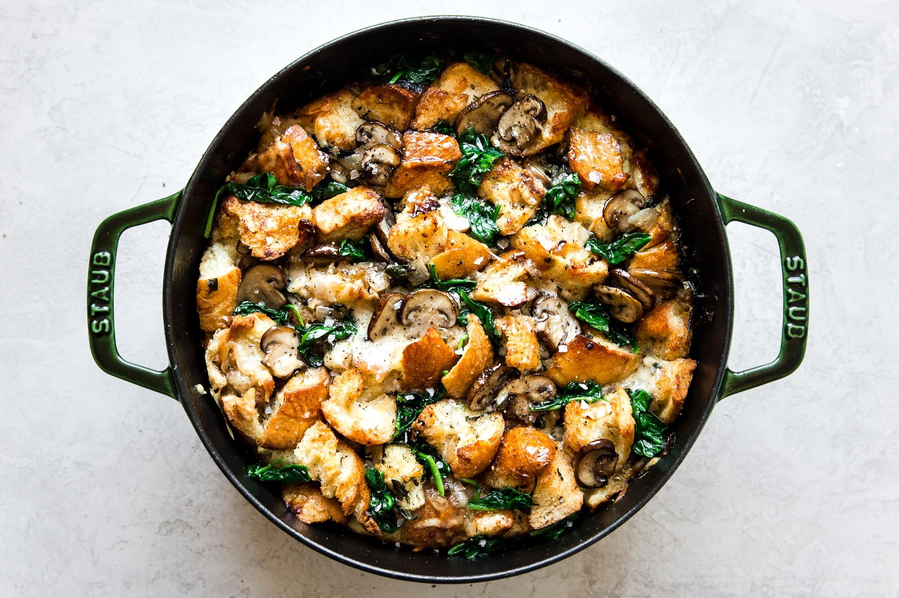
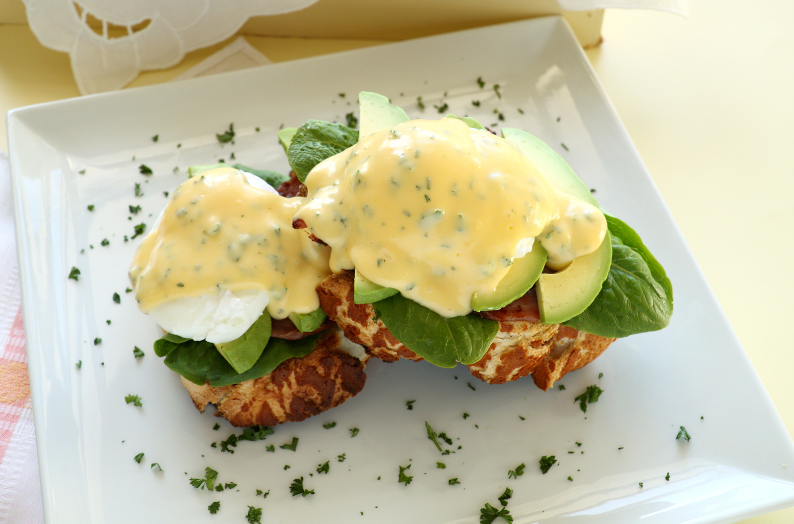
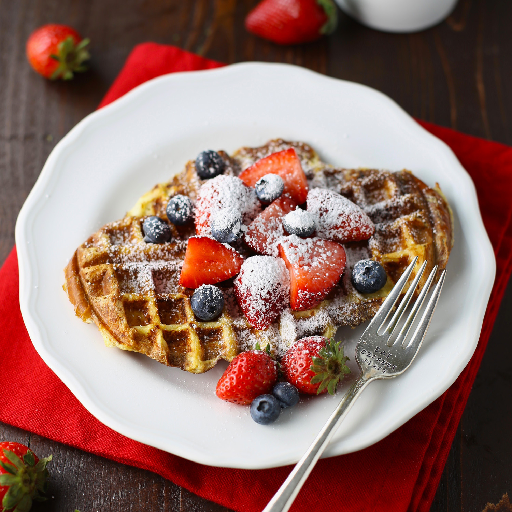

If you are anyone who is even remotely close to me, then you know that it is no secret that breakfast is by far my favourite meal of the day. After that, it's just snacks over actual meals for me. Although some debate that breakfast isn't
the most important meal of the day, it doesn't mean it isn't the most delicious, haha. I try to stay clear from the "plain" types of breakfasts because I find this is the one daily meal I can have a lot of creativity whether that be through
the use of merging two recipes (French Toast Waffles) or taking a simple recipe, like eggs benedict and add a lot of yummy goodness to it. Whether you've only learned how to boil an egg or made an entire frittata on your own, I got recipes
for all. Let's dive in.
Chef Style
1. Spinach Mushroom Strata, The Modern Proper

This hearty meal will surely leave all of your guests and taste buds wanting more. This Strata has the elegance of a top Michelin star restaurant without breaking your bank or wasting your entire Saturday morning prepping. The best part? You can prep
this whole meal the night before and then pull it out of the drive in the morning and toss it in the oven! It is the perfect family meal to start your weekend morning and one that is full of delicious, dense nutrition. This rich, vegetarian
meal will surely be your families (and stomachs) new favourite. The fresh thyme - or rosemary - give it a beautiful scent once fresh out of the oven, and the nutmeg gives it the perfect amount of spice. My favourite part? The soft, slightly
toasted garlic bread coated in gooey, swiss cheese. However, I have no doubt that every part of this elegant dish, will be loved, and devoured by all.
Ingredients
1 loaf: Day-old baguette or crusty bread, crust removed, cut into 1-inch cubes
2 tbs: Butter
1 Small onion
2 tbsp: Fresh thyme or rosemary (about 1 tbs)
8 oz: Mushrooms, sliced
3 cups: Fresh spinach, packed
2 cups: Swiss cheese, grated
8 Eggs
2 cups: Whole milk
1 cup: Heavy cream
2 tsp: Kosher salt
1/2 tsp: Black pepper, freshly ground
1 tsp: Dijon mustard
1/4 tsp: Nutmeg, freshly grated
Directions
Preheat oven to 400 degrees F.
Place the bread cubes on a baking sheet to toast in the oven for about 10 minutes, or when golden brown. Remove, and set aside.
In a saute pan over medium heat, melt the butter and cook the onions, mushroom and herbs with it until the vegetables are soft. Add the spinach to the pan and cook for another 5 minutes until it is completely cooked down. Remove all items in the pan off
the heat, and set aside.
In a 9-inch square or round casserole or springform pan, measure out the toasted bread. The amount of bread you need should fill the dish.
Take the measured portion of the break and place it in a mixing bowl. Add the onion mushroom mixture and 2 cups of swiss cheese to the bread. Toss till well combined.
Turn oven down to 350 degrees F.
In a blender combine the eggs, milk, cream, salt, pepper, mustard and nutmeg. Blend for 10 seconds until combined.
Line your dish with parchment paper or lightly grease the dish. Add the bread and mushroom onion mixture to the pan. Pour the egg mixture over the bread. Press the bread cubes down to make sure they are totally submerged.
Bake the strata uncovered until it has puffed slightly, is golden brown on top and does not shimmy with uncooked egg mixture when you shake the pan, about 1 hour and 15 minutes. Let the strata cool in the pan on a wire rack for 15 minutes.
Restaurant Style
2. Avocado eggs benedict with bacon, goat cheese and hollandaise sauce, LifeAsAStrawberry

The most common, well-known, and loved American breakfast of all time - the egg benedict on its own, brilliant. Mixed with savoury bacon pieces, lemony avocado pieces, and the perfect goat cheese bread, you are destined to come back for seconds. This
easy yet indulgent recipe is one that your taste buds will never get sick of—the crispiness behind the bacon pairs beautifully with the softness of the poached egg. Simultaneously, the hollandaise sauce coats all its glory in a rich, dense
layer of gooeyness. The trick here is to use a bread that toasted well but isn't too thick (i.e. an English muffin). The bread then absorbs the sauce, leaving you wanting more. This is undoubtedly a recipe that can never get old and will
always be a crowd-pleaser. What's even better about this? This recipe takes less than 20 minutes to make...but don't count on it taking anywhere near that time before the plates are wiped clean.
Ingredients
Hollandaise Sauce:
2 egg yolks
2 tsp. lemon juice
1/4 tsp. kosher salt
1/2 cup (1 stick) unsalted butter
1 avocado, sliced and divided
Eggs Benedict:
4 strips bacon
4 eggs
2 English muffins, halved
1/2 cup goat cheese
Salt and pepper to taste
1/4 cup fresh parsley, chopped, for garnish (optional)
Directions
Hollandaise Sauce:
In a blender (hand mixing will work too, but will take more time), add egg yolks, lemon juice, and salt. Blend the mixture for one to two minutes or until the egg yolks become lighter in colour.
In a saucepan, or microwave, melt butter.
Gradually pour the hot butter into the egg mixture, one spoon at a time, allowing the butter to cook the eggs slowly. While combining the two mixtures, continue to blend thoroughly until everything is incorporated.
Blend about 1/4 of the avocado into the combined mixture.
Add salt to taste.
The Assembly
Cook bacon as desired.
Poach eggs in hot water until the egg whites have cooked.
As the eggs are poaching, toast your bread of choice. After the bread is toasted, spread a generous layer of goat cheese on top of each half.
Add a layer of bacon followed by a few slices of the remaining avocado, and then place the egg(s) on top—season egg to preference.
Pour Hollandaise sauce over the sandwich, and garnish with fresh chopped parsley.
Home Style
3. French Toast Waffles, foodelicious

French toast, brilliant. Waffles, to die for. Put together, you get the perfect, sweet, yet indulging breakfast. This easy recipe is my go-to on the weekdays, weekends, holidays … you get the point. This is also by far the fastest recipe to prep and make.
It may just shock you at the raging reviews you will receive from others, in comparison to the lack of effort needed. Okay, now to the good parts. It has the creamy Interior of French toast, but the crispy texture on the outside just like
a waffle. The bread is also perfect for the recipe. It holds up in the waffle maker without getting too flat and maintains a crispy yet delicate texture. You can even add a little bit of cinnamon to the top alongside maple syrup, fruits,
or my personal favourite, chocolate chips. The recipe calls for whole milk because of the higher fat percentage; this creates a thicker batter. However, I also find that any other milk alternative works- so long as you had a small heaping
of cornstarch.
Ingredients
Cooking spray
1/2 cup whole milk
2 large eggs
1/2 tsp. vanilla extract
1 pinch salt
4 pieces 1/2-inch thick pieces brioche
Directions
Preheat waffle iron and generously spray with cooking spray.
Whisk together the milk, eggs, maple syrup, vanilla extract, and salt in a large bowl until thoroughly combined. Dip bread slices one at a time into the mixture, coating both sides thoroughly. Remove bread from the combination and allow access to drain.
Place each bread slice on a baking sheet allowing the blends to soak in.
Placed the soaked bread into a preheated waffle iron. cook according to the manufacturer's instructions.